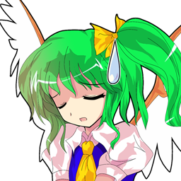
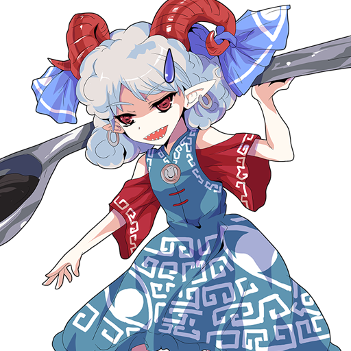

Preguntas y Respuestas
¡Nota! Esta página contiene una caracterización propia del autor que no existe en el original.
En Primer Lugar
| P. ¿Por qué hiciste este juego? | |
|---|---|

|
Fácil porque me gustan hacer juego aparte qué me gusto el estilo de juego de Seravy y su sistema de cartas. Aparte añadí en el juego algunas canciones de Popularity Boom del Touhou 13.5 - Hopeless Masquerade a Reimu y Marisa donde deben activar su carta. |
| P. ¿Por qué los decks están por defecto en el Online? | |
|---|---|
|  |
Porque el juego se desincroniza cuando tienes los decks diferentes, y la mejor manera de arreglar eso fue poner los decks por defecto sin que modificaran los de offline... |
| P. ¿Porqué hiciste dos wikis? | |
|---|---|
|  |
La primera fue como de prueba para la gente online. Y esta es de offline. |
Conocimiento Básico
| P. No entiendo lo que es 236B | |
|---|---|
|
|
El número en la palabra, como "236B", indica la dirección en la que se ingresa el comando. La dirección se expresa como si fuera la disposición del teclado numérico como se muestra a continuación. A y B son solo entradas de botón. ７８９ ＼↑／ ４５６ ←Ｎ→ １２３ ／↓＼ A＝Golpe Leve,B＝Golpe Fuerte,C＝Disparo C,X＝Disparo A,B＝Disparo B En otras palabras, si se escribe "236B", ingrese ↓\→ Todo lo que tienes que hacer es presionar el botón B. |